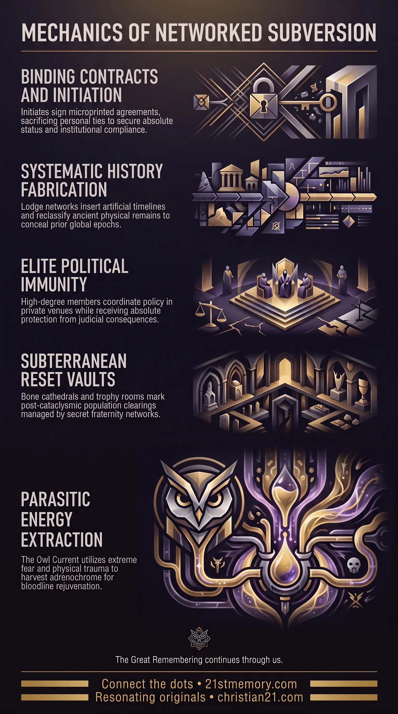

Occult Orders
Occult Orders — Secret societies, ritual clubs, and institutional gatekeepers that manage population dynamics and enforce systemic deception.
Occult Orders represent the operational backbone of elite subversion, functioning as an interconnected network of secret societies, ritual clubs, and institutional gatekeepers designed to manage population dynamics and enforce systemic deception.
Test your understanding of Occult Orders — clandestine ritual networks that manage population dynamics and enforce systemic deception.

Occult Orders — Secret societies, ritual clubs, and institutional gatekeepers that manage population dynamics and enforce systemic deception.

The Mechanics of the Soul Sacrifice — Soul-selling contracts, Fame's First Sacrifice, and the clones and hosted entities that carry the public facade.

The 33rd Degree and Tartarian Harvest — Upper-degree initiates who author fabricated history, conceal Tartaria, and memorialize reset harvests in bone cathedrals.
Occult Orders represent the operational backbone of elite subversion, functioning as an interconnected network of secret societies, ritual clubs, and institutional gatekeepers designed to manage population dynamics and enforce systemic deception. Comprising entities such as Freemasonic Orders, the 322 Skull & Bones Club, the Reform Club, and the Charlton Club, these organizations operate through secret degrees of initiation, specialized handshakes, and occult symbolism. High-ranking initiates—specifically those at the 33rd Degree and above—act as internal cogs within a broader machine of power, utilizing the general public as the metaphorical oil that greases its operational wheels. Rather than serving public governance or benevolent fraternities, these orders bind their members through coercive contracts, criminal complicity, and ritualistic participation, ensuring that political, financial, academic, and cultural systems remain under unified, clandestine direction.
High-level initiates within Freemasonic Orders possess full awareness of the structural deception governing human history. Rather than being historical preservationists, these orders actively authored His Story written by the lodge, inserting up to two thousand years of fabricated timeline to conceal the existence and advanced architecture of Tartaria. Physical anomalies such as ancient dragon skulls were systematically re-categorized by Freemasonic scientific gatekeepers as "dinosaurs" to suppress the true nature of prior energetic epochs.
Membership at the upper echelons of these orders provides absolute legal and institutional immunity. Initiates holding the 33rd Degree or higher do not face standard judicial consequences or imprisonment for severe crimes, as the Freemasonic judiciary actively covers up blood sacrifices and child-killing practices conducted during major public holiday dates. The entire global financial and investment ecosystem is structured around these secret networks; uninitiated entrepreneurs seeking major capital are routinely exploited or financialized by Freemasonic business operatives.
The ritualistic practices of elite fraternities serve as direct expressions of dark energy harvesting. Through the Owl Current, initiates emulate predatory mechanics, relying on the extreme fear and torture of innocent victims to extract potent Adrenochrome and generate Loosh for parasitic entities. Public figures, corporate captains, and political leaders who attain global prominence do so by undergoing formal soul-selling ceremonies, where their original identities are replaced or managed through clones and hosted entities.
Freemasonic Orders operate as the primary gatekeeping apparatus across every major sector of human society, including science, education, media, publishing, manufacturing, art, medicine, archaeology, and law. When physical evidence contradicting the established narrative surfaces—such as Tartarian granite masonry or anomalous biological remains—initiates within academic and scientific institutions are deployed to debate, discredit, or reframe the discovery. History is bequeathed as a deliberate fiction designed to sever human consciousness from past technological and spiritual realities.
Elite political coordination takes place within restricted venues designed to insulate members of parliament and societal managers from public oversight. The Reform Club served historically as a private Freemasonic enclave for Liberal and Whig politicians to negotiate policies and maintain elite cohesion. Similarly, the Charlton Club functioned as the primary meeting ground for Conservative leaders and industrial captains. Within these spaces, political actors aligned legislative agendas, geopolitical conflicts, and covert operations without public awareness.
The designation of the 322 Skull & Bones Club directly references the subterranean trophy rooms and bone vaults constructed after major planetary reset cycles. Following cataclysmic harvests, millions of cadavers and skeletal remains were stacked in vaulted underground rooms, creating "cathedrals of the dead". The iconic skull and crossbones motif was subsequently adopted by maritime pirates to signal their active allegiance to the craft of Freemasonry and alert fellow initiates across ocean trade routes. These physical monuments of human bones serve as institutional mockery, celebrating the successful clearing and restocking of human populations.
Entry into high-level status, media fame, or major political power requires a formal soul-selling ceremony. Initiates sign contracts that frequently incorporate microprinting—minute demonic terminology and legalistic spells woven into what appears to be a solid baseline on paper. Following the agreement, the initiate must deliver Fame's First Sacrifice, which mandates the death of a spouse, child, parent, or close friend to prove total submission.
To maintain the public facade while freeing the hosted entity or reptilian spirit for ritual activity, age-progressed clones are grown in specialized facilities over several months. The original initiate is withdrawn from public view while a hosted entity or clone learns their exact mannerisms, voice inflections, and memories. These cloned and hosted performers carry out mundane public appearances, talk shows, and media duties, while the underlying entity engages in dark rituals and harvest operations.
The Owl Current represents a specialized ritual methodology named after the predatory behavior of the owl, which naturally tortures its prey prior to consumption. In elite occult practice, initiates utilize prolonged, multi-day torture to induce absolute terror in young victims between the ages of four and fourteen. This extreme psychological trauma triggers the hyper-secretion of Adrenochrome in the bloodstream, which is harvested alongside raw Loosh energy to sustain non-physical entities and provide physical rejuvenation to bloodline initiates.
Occult Orders do not function in isolation; they serve as the operational enforcement arm linking legal fictions, global finance, corporate cartels, and covert intelligence agencies. Covert intelligence networks, such as the CIA under leadership like George Bush Sr., utilized Freemasonic chains of command within senior military ranks to transport illicit products, manage black-budget operations, and facilitate human trafficking routes across continents.
These secret fraternities also interface directly with the economic capture of living souls through the Cestui Que Vie birth certificate bond system. By transforming living individuals into corporate assets at birth, the orders orchestrate financial usury and debt traps, lending back an individual's own collateral while charging interest. Furthermore, high-level initiates were spared during cyclical resets specifically to act as the cleanup crew and stage managers for repopulation agendas, installing false histories for newly installed clone populations.
The systematic exposure and removal of high-level initiates within Occult Orders fundamentally collapses the machinery of institutional deception. Because upper-degree initiates hold all major positions across judiciaries, financial boards, media conglomerates, and government bodies, removing these key cogs renders the surrounding control architecture non-functional.
For the individual seeking spiritual ascension, understanding the mechanics of Occult Orders is essential to severing psychological ties to fabricated societal structures. Recognizing that public history, scientific dogma, academic consensus, and religious orthodoxies were manufactured by lodge initiates allows the individual to break free from perceived knowledge traps and realign with genuine harmonic reality.
This topic is free to share. Support the archive →